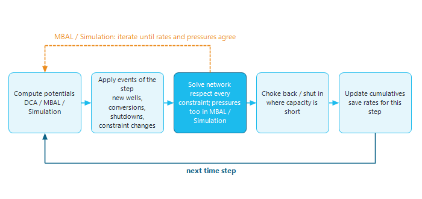
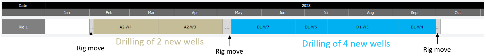

|
Precept philosophy
1. Potentials first, then the network
Precept separates two questions at every time step of the forecast:
•What could each well produce or inject if nothing held it back? This is the well's potential.
•What does the network let it produce? Facilities, pipelines and export routes have limits, and planned events (shutdowns, new wells, conversions) change the picture over time.
At each time step Precept computes the potentials, applies the events of that step, and then solves the network so that no constraint is exceeded, choking back or shutting in wells where capacity is short. The rates found update the cumulative volumes, and the next step starts.

Figure 1 - What Precept does at each time step of a forecast.
2. Three ways to compute potentials
The method is chosen per scenario in the "Potentials" box of "Settings", so a base case and a variant can use different methods and be compared.
|
Setting
|
Where the potential comes from
|
Typical use
|
|
Decline curves
|
A decline curve fitted on each well's history (rate against cumulative or against time). See Decline curves.
|
Mature fields with a reliable history; fast what-if studies on schedules and constraints.
|
|
Material Balance
|
Reservoir tanks whose pressure follows production, injection and aquifer influx, turned into well rates through inflow (IPR) and lift (VLP) curves. See Material Balance.
|
Injection or pressure-maintenance strategies, new fields with little history, depletion-driven gas fields.
|
|
Simulation
|
A 3D reservoir simulator (OPM Flow) run in the loop, one time step at a time. See Simulation coupling.
|
When interference between wells, sweep and water or gas breakthrough matter.
|
3. How the network is solved
3.1 With decline curves: a rate-based network
With decline curves, Precept solves the network with a linear (simplex) optimiser on rates only:
•All rates, at every node of the network, are at standard conditions.
•Constraints can be set at any node, but they are rate constraints: maximum liquid, oil, water, gas, gas lift, water or gas injection, and so on.
•Pressure is not modelled. A change in operating pressure (for example a lower tubing-head pressure after a compressor is installed) must be built into the decline profiles.
•The support of an injector on its neighbouring producers is not calculated: it must be built into the producers' profiles, or modelled with Material Balance.
This makes decline-curve forecasts very fast, which suits long-term planning, reserves work and the testing of many schedules.
3.2 With Material Balance or Simulation: a pressure-aware network
With Material Balance or Simulation, each well's potential depends on the pressure of the node it flows into. Precept therefore also solves the gathering network for pressures, from the fixed pressure at the sink through the pipeline lift curves, and repeats the rate solve and the pressure solve until they agree. Node pressure limits ("Min Pressure", "Max Pressure") can then be set in the network constraints. See Network hydraulics.
3.3 With Petex GAP
Precept can also act as pre- and post-processor for GAP: the schedule of events is built in Precept and exported to GAP, and the GAP forecast is read back and stored with the scenario, so that scenario management, comparison and reporting stay in Precept. See Petex GAP / Prosper coupling.
4. Modelling future events
During a forecast, events change production and injection over time, for example:
•new profiles from newly drilled wells;
•conversions of existing wells (for example producer to injector);
•changes in process constraints after facility upgrades;
•shutdowns.
4.1 Hard dates
Each event can be given a fixed ("hard") date:
•the start date of a new profile, in "New profiles and Conversions" (see New profiles);
•the date of a conversion (see Well conversion);
•the date of a change in constraints, in "Constraints vs time" (see Constraints changes vs time);
•the start and end dates of a shutdown, in "Shutdowns" (see Shutdowns).
Hard dates are simple, but they make what-if scenarios slow to build: when a schedule moves, every dependent date must be changed by hand.
4.2 Recommended: opportunities placed in a sequence of events
The recommended way is to describe each future action as an opportunity (see Opportunities), with its duration, its profiles and its associated shutdowns, and to place the opportunities in a sequence of events for the rig or crew that performs them (see Sequence of events). The dates then follow from the order of the sequence and from its start date.
4.3 Example
On an offshore field, six wells are to be drilled from two platforms, with rig moves and the shutdowns associated with them.
•With hard dates only: enter the start date of each new well's profile in "New profiles and Conversions", and the start and end dates of each rig-move shutdown in "Shutdowns". If the drilling schedule changes, every one of these dates must be edited by hand, which is slow and error-prone.
•With opportunities: create one opportunity per new well and one per rig move (with its shutdowns). Create a sequence of events for "Rig 1" (see Add / Delete sequence of events) and place the six wells and the rig moves in it, in drilling order (see Build sequence of events).

If the rig then arrives late, only the start date of the sequence has to change: the wells, the rig moves and their shutdowns all move with it.
A sequence of events can represent any team or resource that works through a list of jobs, for example:
•drilling of new wells by a rig;
•facilities maintenance by a maintenance crew;
•wellhead maintenance by a well-services crew;
•stimulation of several wells by a stimulation crew.
|